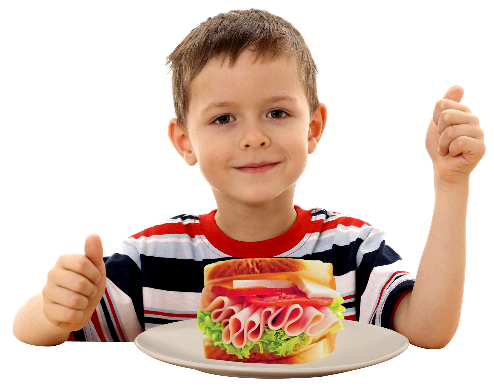

Skip The Diet, Just Eat Healthy With Food Network
Images you don't need a diet because we provide
Healthy and delicious food for you


About Me
As self-proclaimed foodie and fitness enthusiast, I have a passion for cooking and a huge desire to show that living a healthy lifestyle can actually be easy and fun! Feel free to use the meal guide above to find your new favorite meal ideas or the dietary guides to the right to narrow things down even more!